基础计算
不定方程
解法
公考齐麟—【方法技巧】数量0基础——不定方程解法汇总-链接🔗
赋“0”法
- 如果三个未知数，两个方程
- 将系数大的那个项设置为0，求的其余两个未知数
- 就是xyz的和，
- 如果求的是 ： 三个未知数、但不是xyz
x+y+z = 30
3x + y - z = 50
求：4x + y - 2z
令x=0、y=40、z=-10, 答案60
周期问题
- 确定周期，注意每隔，N+1
- 计算最小公倍数，可以两两计算
- 总数<最小公倍数> ➗ 周期，看商和余数
最小公倍数
分别有周期，求同时发生
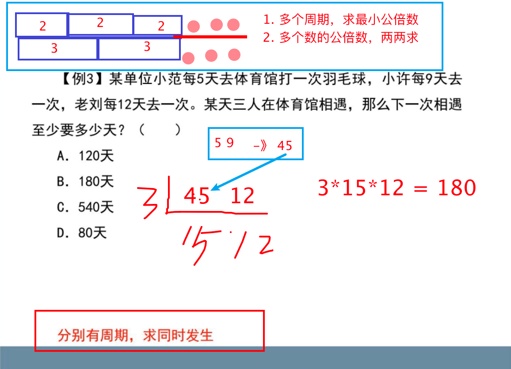每隔 N 天，即 每隔 N+1 天
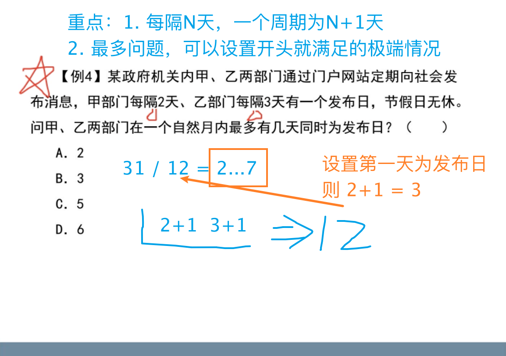等差数列
和 = （首项 + 未项）/ 2 * 项数
= 中位数 * 项数
= 平均数 * 项数
第 N 项 = 第一项 + (n-1) *公差
- 1-10 共 10-1+1 = 10位
- 3-10 共 10-3+1 = 8位
- 1-9 中间位 （9+1）/2 = 5
- 1-10 中间位 （10+1） /2
工程问题
特征
- 若干个人干活
- 完成工程
- 就是多人干活
- 就是多人干活
公式
工作总量=工作效率 X 工作时间
常用方法

工作总量
- 赋值总量为时间的
公倍数 - 计算工作效率
- 按题目要求完成计算
⚠️：找等量关系，一定按步骤做题
等量关系找不到再找
- 因为中间有人休息，6 小时是两人共同完成的时间✅
- 等式是需要根据实际的情况而获得🉐️
最终需要映射为真实的数据
工作总量 & 最优解
工程量的原则不变；
各自负责擅长的
✅完成自己负责的，去帮助他人
工作效率
等量关系
遇到问题不要慌，就是等量关系就是总量
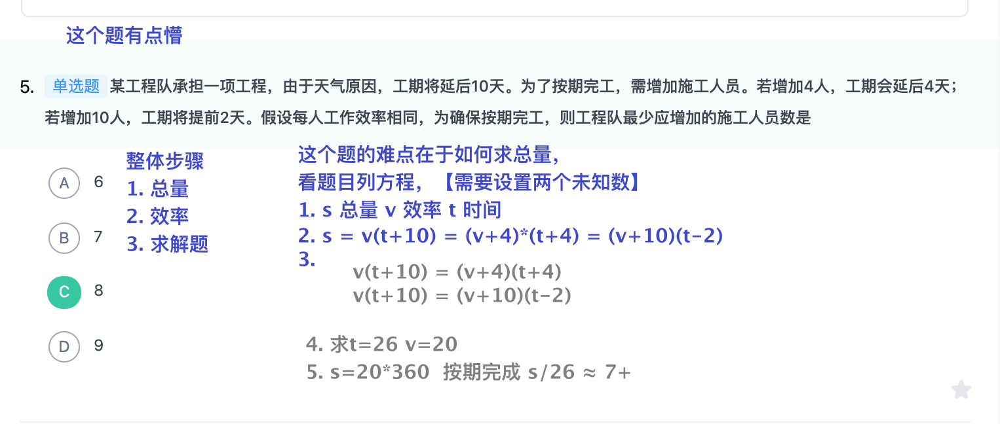
如果同时开始、结束，则要考虑计算总时间，与题目一正好相反
集合容斥
- 两个集合公式：总数-两者都不=A+B-AB
- 三个集合标准公式：
- 总数-三个都不 =
A+B+C - AB - AC — BC + ABC
- 总数-三个都不 =
- 三个集合变形公式
- 总数-三个都不 =
A+B+C - 同时两者 - 2ABC - ABC 加了三遍，只需要留一个，故 -2ABC
- 总数-三个都不 =
- 文氏图 《只满足某一项》
- 画图
- 从中心向外层，填数字
文氏图
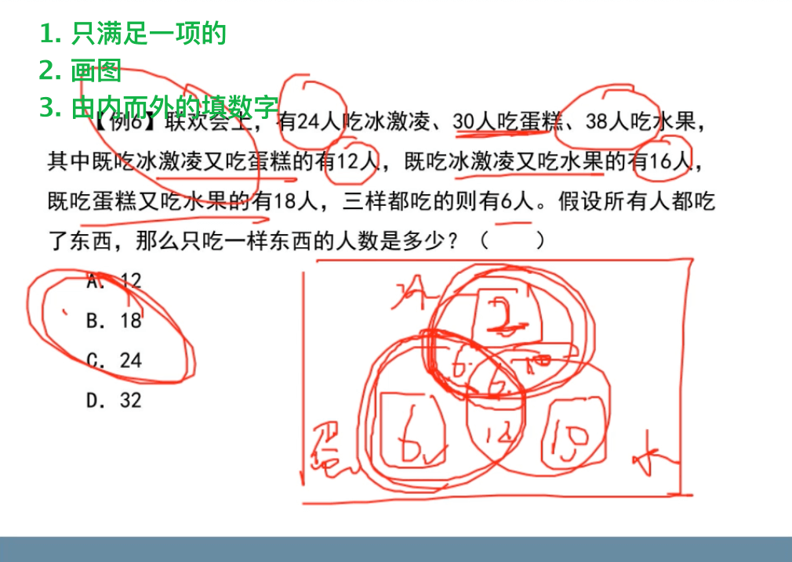 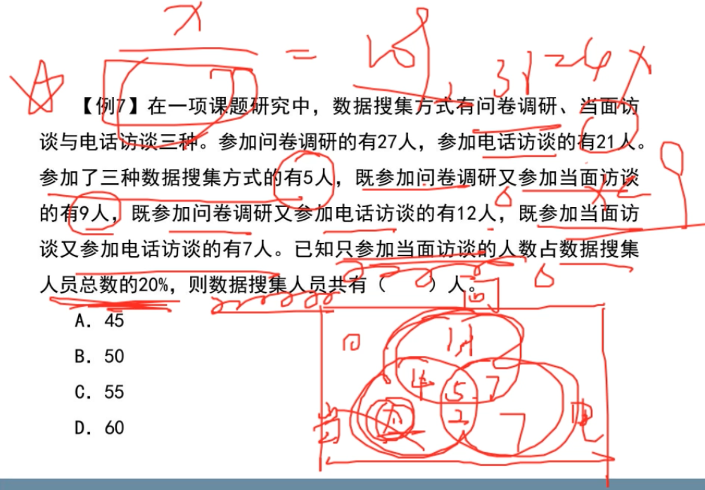经济利润问题
利润率 = 利润 / 成本 = （售价 -成本）/ 成本
打几折： 原价*零点几
基本公式
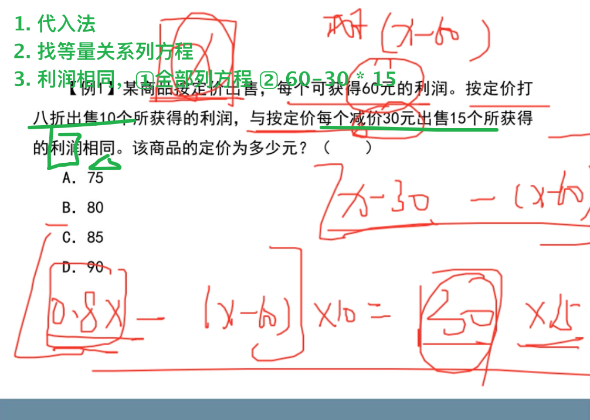部分打折 🚩
总利润=每部分利润之和
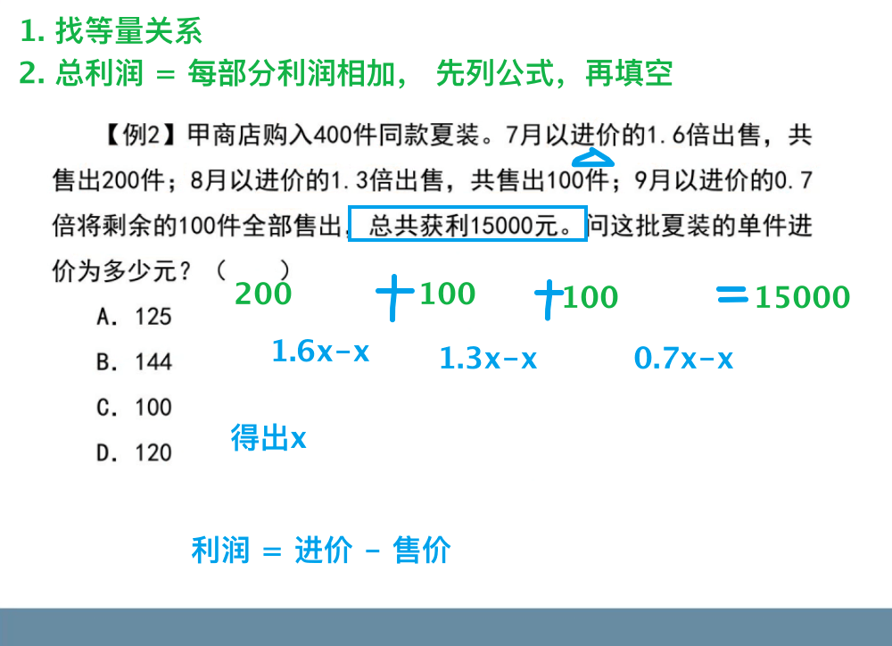 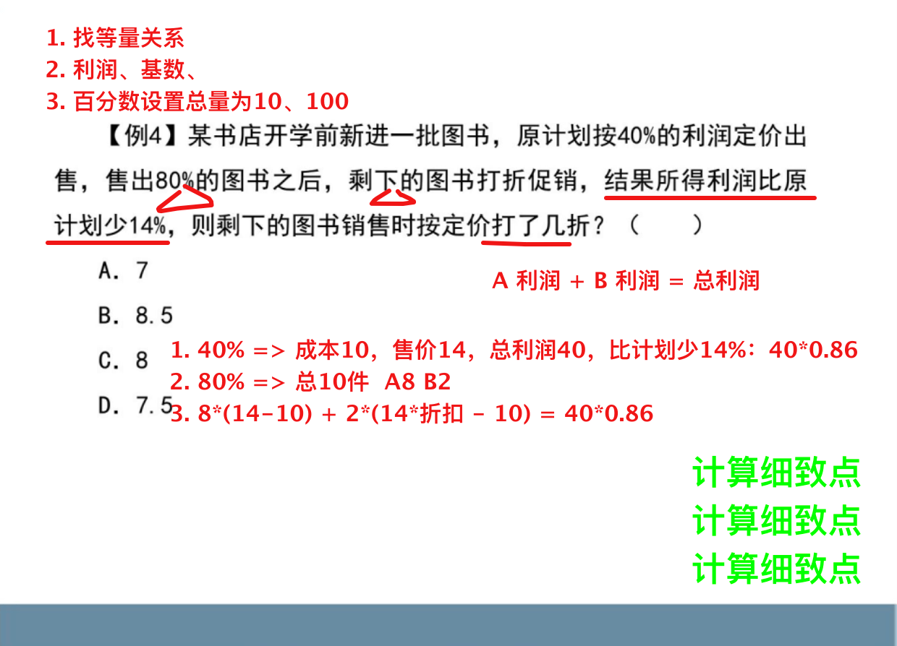
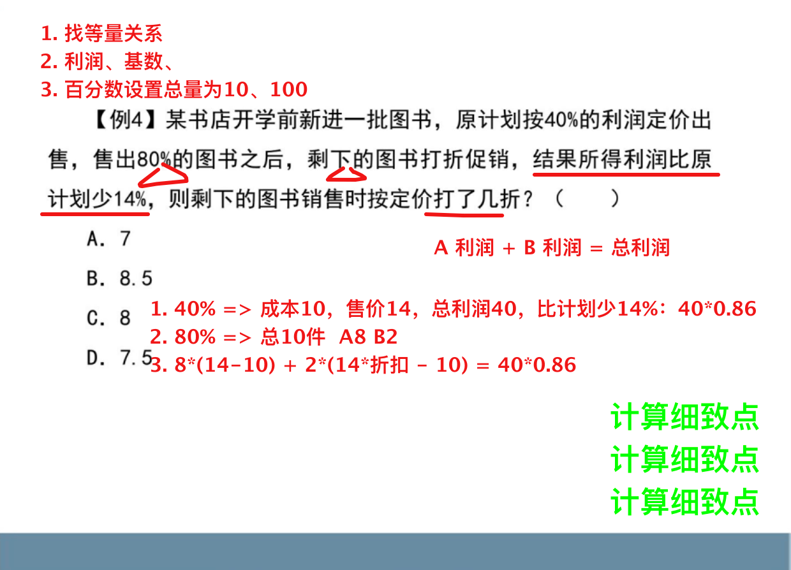
分段计费
找准分段点，分段计算
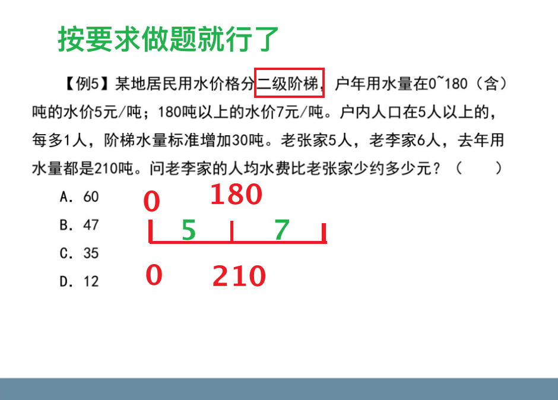最值问题
最值问题
- 至多
- 至少
- 最多
- 做少
- 至少+保证 — 最不利构造
原则：气死
方式
- 想要什么不给什么
- 想要 N，先给 N-1
- 不需要的东西统统给
答案：气死之后加 1
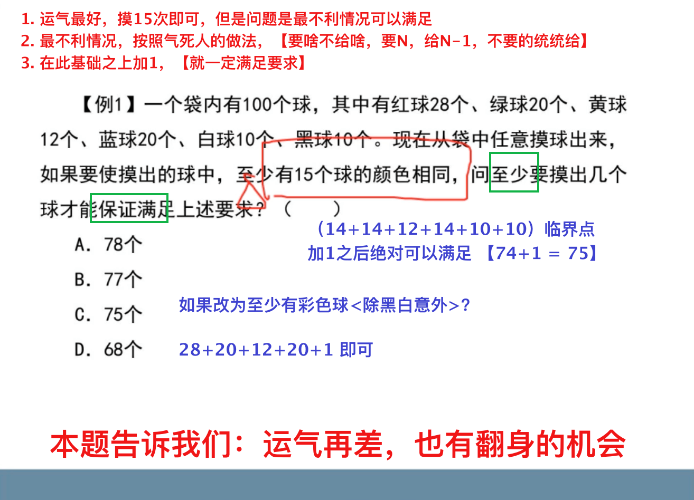 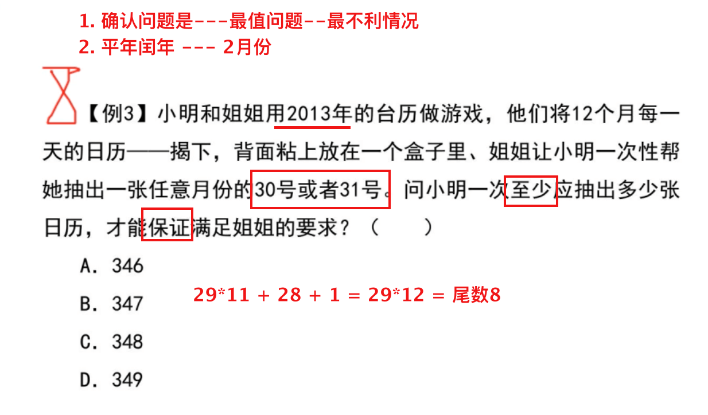转为简单的问题
至少报一个，将报名一个、二个、三个、四个、五个的情况相加。
C5·1 + C5·2 + C5·3 + C5·4 + 1 这就是球球数量；
数量*（N-1）+ 1 = 31*3=1 = 94
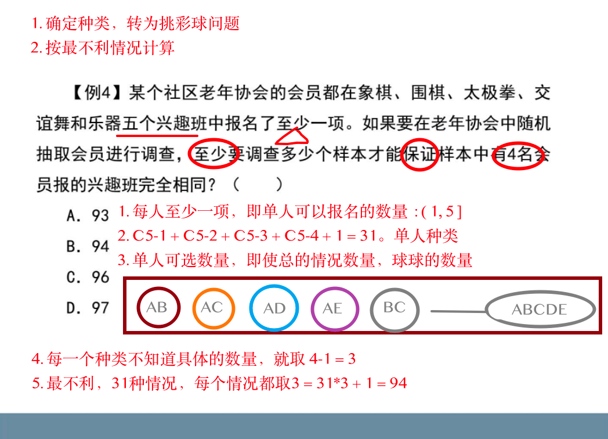2 的 5 次方-1
这样计算总数很溜
数列构造
送分题
题干特征
固定总和，分成若干份，求其中某一项的最值
步骤
- 编号
- 求谁设谁
- 按要求完成构造、求解
多集合反向构造 🌈
送分题
- 已知
若干单个集合 - 求
最中心的最小值 没有相交
步骤
反向、求和、做差
减 加 减

趣味杂题
指数取余数
乘方尾数口诀：指数除以4，取余数，如果整除，取4；底数保留个位即可。
两两求和问题
题型特性
不同的数、组成不同的和。总的有Cn-2个，不重要。
默认为⼩到⼤排列。
⼤ DE 45 ⼤ CE 42 ⼩ AB 17 ⼩ 25 如果求A与E的差，直接25-17 3⃣ 该题⽬需要计算全部的。⼩ BC = 28 进⼀步就可以解的答案，不难。
但不要慌，加减法要快。
数量小，罗列出所有的可能性
某疗养院同一个房间的四位病友，把他们的年龄（均为整数）两两相加得到6个不同的数，已知其中5个数为：99，113，125，130，144，四人中年龄最大者与年龄最小者岁数之和为（ ）岁。
数量大，直接推导，很可能直接就出来了
看题型
年龄问题

比赛问题
空瓶换酒
A.10瓶
B.11瓶
C.8瓶
D.9瓶
6个空瓶可以换一瓶汽水，某班同学喝了157瓶汽水，其中有一些是用喝剩下来的空瓶换的，那么他们至少要买多少瓶汽水？（ ）
A. 131
B. 130
C. 128
D. 127
牢记公式： M/N-1
- N个空瓶 <-> 1 水
- 共M个空瓶 可以得多少水？
- 记得取整数。
- 如果7换2 =》 3.5=》1
事例二，灵活运用公式
- 灵活运用公式
- 找等量关系，买的+换的=总的
- 买X
- X又可以换 X/5
- X+X/5=157
天平问题
有一架天平，只有5克和30克的砝码各一个。现在要用这架天平把300克味精平均分成3份，那么至少需要称多少次？（ ）
称好的可以当砝码。
第⼀次：⽤所有的砝码，获得35g味精；
第⼆次：砝码：35g的味精+30g的砝码 = 称出：65；共100g;
第三次：剩下的200直接左右平分
考试应该不会太难，多看几遍，操作流程
应该就是就是
- 最后一次，左右平分；
- 前面的次数，最快计算出一份的次数。
- 以第一称出来的为基准，第二次向总数靠。
时钟问题
表盘上的常识：
表盘一圈分成了12大格（60小格），时针每小时转1大格，分针每小时转12大格（60小格）。
- 度数：1大格30°，1小格6°
- 速度：
- 时针的速度：每分钟走0.5°；
- 分针的速度：每分钟走6°。
- 两者速度差5.5°/分钟
公式：
- N点M分的夹角：Nx30度 - Mx5.5度
- 套用路程公式
- 追及问题
- 三点的夹角90度，19分，分针超过时针，
- 速度差*时间 = 路程差
- 路程差-90度
A．14度
B．14.5度
C．15度
D．15.5度
挑小球问题
记住：3的n次方；
原理：三个小球，一次可以，超过三个的按三个一组即可。
牛吃草问题
溶液问题 🌈
基本公式：
溶液（盐水）＝溶质（盐）+溶剂（水）；
浓度＝溶质÷溶液；
常考题型及入手点：
①蒸发稀释类：溶质不变
②溶液混合类：混合前后总溶质相等
③反复操作类：总溶液不变，计算剩余溶质
两杯溶液来回折腾
余数同余问题
特征
除以几余几、除以几余几、除以几余几
步骤
- 最小公倍数
- 余数相同取余数，
- 9…4; 3…4
- 27N+4
- 差同取差
- 7…4; 9…6
- 63N-2
- 和同加和
- 1…4; 2…3
- 2N+5
- 没有以上规律
- 两两比较，看是否有以上关系，
- 如果各不相同
- 看下侧实例
- 任何两个都没有以上关系，同余、差同、和同
- 设 11X+4 【从大数开始】
- 从 0 代入简单的数：4、15、26、37
- 26 除以 3 余 2
- 得：11&3 的公倍数+26 = 33N + 26
- 从 0 代入：26、59、
- 59 除以 7 余 3
- 得：33&7 的公倍数+59 = 231N + 59
- 得到最终的公式后，从 0 代入
- 0-4 共 5 个数字。直接用 1000/231 的个数字比较一下就可以找有几个 N 了。
时间问题 🚩
- 平年：年份不能被 4 整除
- 闰年：年份能被 4 整除 & 还能被 400 整除
- 大月：1、3、5、7、8、10、12 【共 7 个】
- 小月：4、6、9、11 【共四个】
- 2 月：28、29
排列组合与概率
基本概念
捆绑插空
- 捆绑：在一起、相邻、挨着
- 插空：不相邻
计算反面
正面情况复杂
错位排列 🌈
识别： 不能《》自己
不在自己原来的位置
送分题不能丢
送分题不能丢
送分题不能丢
- D2 = 1;
- D3 = 2;
- D4 = 9;
- D5 = 44;
- D6 = 265;

书架某层按一定顺序摆放了8本不同的书，把这些书重新摆放后，恰好有5本书与原来顺序不相同，问有多少种可能的情况？
- 分两步计算
- 三本位置相同，8选3，C8-3 = 44
- 5本书与原来顺序不相同，转换为错位排列问题，D5 = 44.
环形排列
概率 🚩
- 概率=满足要求的数量 / 总情况数量🚩
- 成立的概率 = 1 - 不成功的概率
- 分步概率 = 满足条件的每个步骤的概率之积 – 类似 排列组合分步。
- 总体（分类）概率 = 满足条件的各个情况概率
之和;
已知概率用 234 就行；
数量用 1 就行；
行程问题
火车过桥问题
过桥：总路程 = 桥长 + 车长
完全在桥上：走过的路程=桥城-车长

相遇问题
路程和=速度和*时间
环形相遇追及
- 同向相遇，多N圈，（快-慢）t = 一圈的路程
- 相向相遇，一圈，（快+慢）t = 一圈的路程
多次追及问题，路程总和=(2N-1)*S
- 从两侧出发，公式路程总和=(2N-1)*S
- 同一侧出发，第一次2S、4S、6S，2N*S
别被问题干扰了，牢记基本公式；
S=VT， 狗子的速度有了，就缺时间了，两个相遇的时间就是狗子的时间
类似题目，行程确定公式，找等量关系、时间、速度。
流水行船
顺水速度 = 船速 + 水速
逆水速度 = 船速 - 水速

两岸问题
几何问题
拿分题
村官小刘负责将村委会购买的一批煤分给村中的困难户，如果给每个困难户分300千克煤，则缺500千克；
如果给每个困难户为250千克煤，则剩余250千克。为帮助困难户，村委会购买了多少煤？（ ）
A.5500千克
B.5000千克
C.4500千克
D.4000千克
- 方法一，列方恒，直接求解。可能有点绕。
- 前后两次，人数不变，少分N 对应 总数多M ，即 人数 = M/N
- 想不来第二种，就列方程，不费时间的。